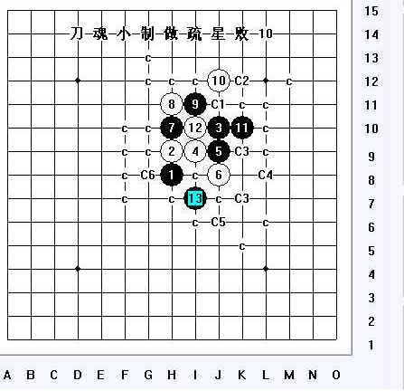

号外号外~！第一次见到的疏星白8
#1 号外号外~！第一次见到的疏星白8作者：索非亚 发表时间：2009-9-1 23:46:48
=======上图对应的爱五子棋谱代码如下，以便你拆解：========
h8h9j10i9j9j8h10h11
======================================================
非常的震惊，大家也来一睹这个8，原实战棋谱不发了，只是这个8，大家意外了没有~~
［ 茗弈小刀 于 2009-9-2 10:30:25 时花20金币送鲜花一朵］
#2 Re:号外号外~！第一次见到的疏星白8作者：极地剑客 发表时间：2009-9-1 23:50:57
索大神被人搞残了吗#3 Re:号外号外~！第一次见到的疏星白8作者：索非亚 发表时间：2009-9-1 23:56:54
一直被摧残啊，神啊，救我吧#4 Re:号外号外~！第一次见到的疏星白8作者：索非亚 发表时间：2009-9-1 23:59:42
想来想去还是把原实战棋谱发出来，绝对不是对黑方或者白方的不尊重，只是让大家也来看下黑方跟白方两位的精彩对局
=======上图对应的爱五子棋谱代码如下，以便你拆解：========
h8h9j10i9j9j8h10h11g9i11k10i10i8h7j11i12i13j13g10g8f9i7
======================================================到这里白必胜了
#5 Re:号外号外~！第一次见到的疏星白8作者：米 发表时间：2009-9-2 7:47:44
=======上图对应的爱五子棋谱代码如下，以便你拆解：========
h8h9j10i9j9j8h10h11i11j12i8k10e9
======================================================
我来抛砖引玉吧。我觉得实战中黑棋不利乃至于到22手后必败的祸根是让白10占据了要点。敌之要点我之所求，上图中黑9走在实战白10的位置，这样白10就只有图中这一个点可走，其余都必败了。黑11后，白12防在八卦点挡住两个活二，看似要点，却被黑棋潇洒地一跳，黑胜定。这里白12只有h7和g10两个点可以考虑，其余必败，而h7帮黑解禁手且白子散乱，g10帮黑解禁手且让黑11刚好预先堵住白一个活二，感觉上都是黑优局面。不知黑是否有更好走法，或针对这两个白12黑是否有好的手段。
［ 茗弈小刀 于 2009-9-2 10:25:16 时奖励此帖[金币加 20 威望加1］
#6 Re:Re:号外号外~！第一次见到的疏星白8作者：sonix 发表时间：2009-9-2 9:47:04
=======上图对应的爱五子棋谱代码如下，以便你拆解：========
h8h9j10i9j9j8h10h11i11j12i8g10h7g6g9
======================================================
12-h7没啥思路
［ 茗弈小刀 于 2009-9-2 10:25:48 时花20金币送鲜花一朵］
#7 Re:号外号外~！第一次见到的疏星白8作者：茗弈小刀 发表时间：2009-9-2 10:29:36
感谢小米老师指导，让人耳目一新，豁然开朗。楼主这个实战对局是我大徒弟和弟弟下的，最近流行起来这个8，还有比赛中的那个8
=======上图对应的爱五子棋谱代码如下，以便你拆解：========
h8h9j10i9j9j8h10i11
======================================================
这里也希望实战选手留意一下。也谢谢索非亚弟弟这个贴，全锦赛即将来临，希望给棋手们一点薄微的帮助和提醒。
#8 Re:号外号外~！第一次见到的疏星白8作者：五子痴 发表时间：2009-9-2 20:33:01
=======上图对应的爱五子棋谱代码如下，以便你拆解：========
h8h9j10i9j9j8h10h11i11j12k10i10i7
======================================================
这样应该杀了吧 很新颖的8可惜没生命力！楼上的8对黑是种挑战
［ 茗弈宽容 于 2009-9-2 20:52:35 时花20金币送鲜花一朵］
#9 Re:号外号外~！第一次见到的疏星白8作者：茗弈宽容 发表时间：2009-9-2 20:49:27
楼上，偶像！#10 Re:号外号外~！第一次见到的疏星白8作者：茗弈宽容 发表时间：2009-9-2 20:50:56
=======上图对应的爱五子棋谱代码如下，以便你拆解：========
h8h9j10i9j9j8h10h11i11j12k10i10i7j6
======================================================
#11 Re:号外号外~！第一次见到的疏星白8作者：刀魂 发表时间：2009-9-2 21:27:44
小拆了半个多小时，终于拆除这个10必败了（有不明白杀的地方，可以问我）：

#12 Re:号外号外~！第一次见到的疏星白8作者：胆小的骆驼 发表时间：2009-9-2 21:32:49
其实这个白8是骗招必败的，
=======上图对应的爱五子棋谱代码如下，以便你拆解：========
h8h9j10i9j9j8h10h11i11j12g9f10k10i10l11m12l10k11
======================================================
=======上图对应的爱五子棋谱代码如下，以便你拆解：========
h8h9j10i9j9j8h10h11i11j12g9g10
======================================================
这样是黑必胜的，后面2个防点黑都有很精彩的VCT
#13 Re:号外号外~！第一次见到的疏星白8作者：wd1988 发表时间：2009-9-2 22:42:50
你下到白点的位置然后说黑必胜，莫不是要玩我们。。。既然不想说，那就别发帖，想告诉我们这个形状黑必胜，至少也要走到黑点的位置吧？
我告诉你，这个点之后有一个黑子可以黑必胜哦！你去猜呀~
=======上图对应的爱五子棋谱代码如下，以便你拆解：========
h8h9j10i9g9i7
======================================================
#14 Re:号外号外~！第一次见到的疏星白8作者：索非亚 发表时间：2009-9-2 22:54:04
=======上图对应的爱五子棋谱代码如下，以便你拆解：========
h8h9j10i9j9j8h10h11g9i11k10i10i8h7j11i12i13j13g10g8f9i7j7g5k9f7
======================================================
对不起，是我做事没做好。=======上图对应的爱五子棋谱代码如下，以便你拆解：========
h8h9j10i9j9j8h10h11g9i11k10i10i8h7j11i12i13j13g10g8f9i7f7k7j7h6g5k5
======================================================
=======上图对应的爱五子棋谱代码如下，以便你拆解：========
h8h9j10i9j9j8h10h11g9i11k10i10i8h7j11i12i13j13g10g8f9i7g7h6
======================================================
=======上图对应的爱五子棋谱代码如下，以便你拆解：========
h8h9j10i9j9j8h10h11g9i11k10i10i8h7j11i12i13j13g10g8f9i7g7k7
======================================================这图跟上图两个白点都可以胜
=======上图对应的爱五子棋谱代码如下，以便你拆解：========
h8h9j10i9j9j8h10h11g9i11k10i10i8h7j11i12i13j13g10g8f9i7j7g5h6i5
======================================================
#15 Re:号外号外~！第一次见到的疏星白8作者：索非亚 发表时间：2009-9-2 23:28:46
刀魂制作的C5点应该最难杀，正好刚做完。提供点思路。
=======上图对应的爱五子棋谱代码如下，以便你拆解：========
h8h9j10i9j9j8h10h11i11j12k10i10i7j6f8e7f10
======================================================
=======上图对应的爱五子棋谱代码如下，以便你拆解：========
h8h9j10i9j9j8h10h11i11j12k10i10i7j6f8g9f9
======================================================
=======上图对应的爱五子棋谱代码如下，以便你拆解：========
h8h9j10i9j9j8h10h11i11j12k10i10i7j6f8g8f7
======================================================
#16 Re:号外号外~！第一次见到的疏星白8作者：千羽鹤 发表时间：2009-9-2 23:36:10
你想复杂了=======上图对应的爱五子棋谱代码如下，以便你拆解：========
h8h9j10i9j9j8h10h11i11j12k10i10i7j6l11m12j11
======================================================
［ 茗弈宽容 于 2009-9-3 10:31:56 时花20金币送鲜花一朵］
#17 Re:号外号外~！第一次见到的疏星白8作者：索非亚 发表时间：2009-9-2 23:42:57
=======上图对应的爱五子棋谱代码如下，以便你拆解：========
h8h9j10i9j9j8h10h11i11j12k10i10i7j6l11m12j11k9
======================================================这个我没有杀掉
#18 Re:Re:号外号外~！第一次见到的疏星白8作者：刀魂 发表时间：2009-9-3 8:43:14
引用：
原文由 索非亚 发表于 2009-9-2 23:42:57 :
=======上图对应的爱五子棋谱代码如下，以便你拆解：========
h8h9j10i9j9j8h10h11i11j12k10i10i7j6l11m12j11k9
======================================================这个我没有杀掉（杀干净了）
（杀干净了）
=======上图对应的爱五子棋谱代码如下，以便你拆解：========
h8h9j10i9j9j8h10h11i11j12k10i10i7j6l11m12j11k9l9m8l10
======================================================
=======上图对应的爱五子棋谱代码如下，以便你拆解：========
h8h9j10i9j9j8h10h11i11j12k10i10i7j6l11m12j11k9l9i12j7
======================================================
#19 Re:号外号外~！第一次见到的疏星白8作者：索非亚 发表时间：2009-9-3 9:16:27
=======上图对应的爱五子棋谱代码如下，以便你拆解：========
h8h9j10i9j9j8h10h11i11j12k10i10i7j6l11m12j11k9l9i12j7l12k12k7
======================================================这个还是需要借用左边的棋型，在右边我确实没有看到如何局部胜
#20 Re:号外号外~！第一次见到的疏星白8作者：茗弈宽容 发表时间：2009-9-3 10:33:07
索菲亚弟弟别的点都做完了吗?
#21 Re:号外号外~！第一次见到的疏星白8作者：索非亚 发表时间：2009-9-3 10:49:15
把这个8给杀掉了。
［ 茗弈宽容 于 2009-9-3 12:15:45 时花20金币送鲜花一朵］
#22 Re:号外号外~！第一次见到的疏星白8作者：茗弈宽容 发表时间：2009-9-3 12:15:34
偶的个乖乖，强银呀！#23 Re:号外号外~！第一次见到的疏星白8作者：刀魂 发表时间：2009-9-3 16:58:51
 不懂得可以问我哈，偶的乖乖
不懂得可以问我哈，偶的乖乖#24 Re:Re:号外号外~！第一次见到的疏星白8作者：胆小的骆驼 发表时间：2009-9-6 20:03:28
=======上图对应的爱五子棋谱代码如下，以便你拆解：========
h8h9j10i9j9j8h10h11i11j12g9
======================================================
我是用这个11解决这个败8的
下面是做的地毯
［ 米 于 2009-9-7 0:03:35 时花20金币送鲜花一朵］
［ gerbo 于 2009-9-8 16:23:39 时花20金币送鲜花一朵］
#25 Re:Re:Re:号外号外~！第一次见到的疏星白8作者：胆小的骆驼 发表时间：2009-9-6 20:04:04
 疏星败8地毯.rar
疏星败8地毯.rar［ wd1988 于 2010-1-3 18:06:40 时花20金币送鲜花一朵］
#26 Re:号外号外~！第一次见到的疏星白8作者：小帮帮 发表时间：2009-12-30 15:38:37
厉害，都是高人啊
#27 Re:Re:号外号外~！第一次见到的疏星白8作者：wd1988 发表时间：2010-1-3 18:54:53
引用：
原文由 索非亚 发表于 2009-9-3 9:16:27 :
=======上图对应的爱五子棋谱代码如下，以便你拆解：========
h8h9j10i9j9j8h10h11i11j12k10i10i7j6l11m12j11k9l9i12j7l12k12k7
======================================================这个还是需要借用左边的棋型，在右边我确实没有看到如何局部胜
下棋本来就是要全盘联系的。该25必胜，左右联系。既然右边局部杀不出，那干嘛非要执着于在局部杀出来呢？
=======上图对应的爱五子棋谱代码如下，以便你拆解：========
h8h9j10i9j9j8h10h11i11j12k10i10i7j6l11m12j11k9l9i12j7l12k12k7g9
======================================================
这个25之后轻易杀出
#28 Re:号外号外~！第一次见到的疏星白8作者：≈★诚心★≈ 发表时间：2013-5-29 18:33:30
［ 茗弈宽容 于 2013-5-30 13:36:35 时花20金币送鲜花一朵］
［ 茗弈宽容 于 2013-5-30 13:36:35 时花20金币送鲜花一朵］
［ 茗弈宽容 于 2013-5-30 13:36:35 时花20金币送鲜花一朵］
#29 Re:号外号外~！第一次见到的疏星白8作者：茗弈宽容 发表时间：2013-5-30 13:34:26
楼上臭小子最近过得比较滋润啊~ 祝福弟弟和弟妹开心每一天,心想事成~
祝福弟弟和弟妹开心每一天,心想事成~#30 Re:号外号外~！第一次见到的疏星白8作者：牟林昊 发表时间：2013-6-10 7:58:57
〔整理一下〕米老师出品详解，
三个一：1、
#31 Re:号外号外~！第一次见到的疏星白8作者：牟林昊 发表时间：2013-6-10 8:16:20
骆驼老师出品详解：
2、
诚心出品分支：1、
#32 Re:号外号外~！第一次见到的疏星白8作者：牟林昊 发表时间：2013-6-10 8:32:48
五子痴老师出品详解：
。。。，
：
鸣谢刀魂先生提供部分截图
［ 逆刃 于 2013-6-10 8:41:07 时奖励此帖[金币加 100 威望加1］